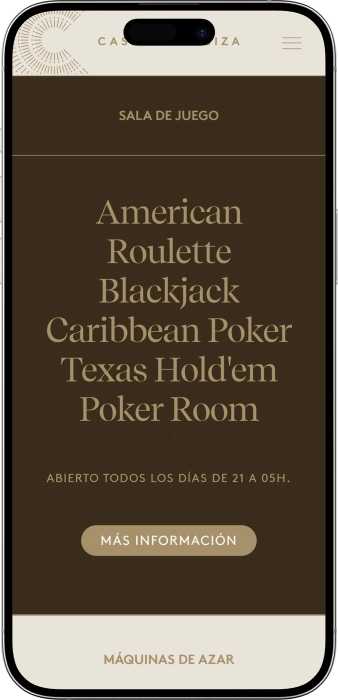

Oferta exclusiva de bienvenida de
Oferta exclusiva de bienvenida de
Casino de Ibiza — ruleta, póker, slots y ambiente nocturno
Los mejores casinos
Detalles de bonificación
Casino
Bonos
Rate
Giros gratis
Más info
Conseguir
Ventajas
-
Botes progresivos en slots, pagos altos.
-
Ruleta electrónica: rondas rápidas, premios frecuentes.
-
Mesas en vivo: ruleta y blackjack.
-
Sala de póker: cash, torneos, premios.
-
Más de 100 juegos y máquinas.
-
Ambiente premium dentro de un hotel.
-
Cócteles, bar y gastronomía nocturna.
- Casino de Ibiza destaca por unir ritmo nocturno, comodidad y una oferta de juego muy completa. Es fácil empezar con slots y cócteles y pasar después a mesas en vivo y póker. Su ubicación junto a la marina refuerza una experiencia elegante y muy social.
Casino de Ibiza App


Acerca de Casino de Ibiza
El casino se distingue por su concepto nocturno y entorno premium junto a la marina. Además, permite alternar fácilmente slots, mesas y póker en un mismo lugar.
- Premios en slots: hasta 90.000 €.
- Botes: hasta 50.000 €.
- Póker: premios hasta 10.000 €.
Casino de Ibiza es un espacio nocturno vibrante donde el juego se mezcla con el ambiente festivo de la isla. Se vive como parte de la vida social: muchos van tanto a jugar como a pasar el rato. En el interior se aprecia un diseño contemporáneo con iluminación suave y zonas cómodas.
La sala de slots encaja con quienes buscan ritmo y partidas rápidas. El área de mesas aporta sensación clásica con crupieres y reglas tradicionales. La sala de póker suma un componente más “deportivo” y social. La barra acompaña el ritmo de la noche y permite pausas entre apuestas y manos. El concepto está pensado para horarios tardíos y energía constante. Es fácil combinar la visita con un paseo por la marina y una cena cercana. En conjunto, Casino de Ibiza se siente como una experiencia de juego y ocio con estilo.
Casino de Ibiza: noche con estilo, juego y gastronomía
Casino de Ibiza se percibe como un casino moderno con espíritu social, donde no solo importan las mesas y las máquinas, sino el ambiente general de la noche. El interior suele apoyarse en detalles de diseño, luz suave y espacios bien separados para que el ruido de los slots no invada el juego de mesa. La sensación es más de encuentro nocturno elegante que de casino rígido y tradicional. Mucha gente acude en pareja o en grupo, combinando apuestas con cócteles y conversación.
En cuanto a horarios, el concepto está pensado para tarde y noche: la zona de slots suele activarse antes y las mesas y el póker toman fuerza a partir de horas más tardías. Ese ritmo encaja con planes de cena, paseo por la marina y, después, casino. Por la noche la dinámica cambia: entra más público, sube la energía y el ambiente se vuelve más animado cerca de medianoche. En periodos concretos puede haber ajustes temporales, por lo que conviene verificar el horario antes de ir.
La parte de bar y gastronomía actúa como puente entre las zonas de juego. La coctelería suele ir de opciones ligeras y frescas a clásicos más intensos, pensados para la noche. La oferta de comida se centra en propuestas fáciles de tomar sin romper el ritmo, ideales para una pausa breve entre sesiones. Para muchos, la barra es el punto de “reset”: respirar, comentar la jugada y decidir el siguiente paso.
A nivel de descanso, el hecho de estar integrado en un gran complejo hotelero aporta comodidad: zonas comunes, opciones de transporte, puntos de restauración y una infraestructura cuidada. Es perfecto para quien quiere pasar la noche sin desplazamientos innecesarios. El formato “todo cerca” permite alternar aire libre, juego y bar con flexibilidad. La ubicación junto a la marina suma un toque especial, sobre todo en épocas cálidas.
Los eventos y el entretenimiento suelen girar en torno al ocio nocturno: sesiones de póker, noches temáticas, propuestas estacionales y acciones especiales vinculadas al bar. Estas actividades refuerzan el componente social: no se trata solo de apostar, sino de vivir el plan completo. En determinados momentos gana peso el enfoque de terraza y el aire “open air”, ideal para mezclar juego y cócteles. En conjunto, Casino de Ibiza se vive como un escenario donde el juego forma parte de una noche con estilo.
En casinos de este nivel, los programas de bonos y fidelización suelen centrarse en recompensar visitas repetidas: invitaciones, consumiciones, accesos preferentes y atención prioritaria. Los jugadores más activos suelen recibir propuestas personalizadas según frecuencia y volumen de juego. Lo habitual es que estas ventajas se integren en un servicio premium sin resultar intrusivas. Si la idea es jugar con regularidad, lo más rentable es preguntar por las condiciones de participación al personal del salón.
Servicio y gestión del dinero en Casino de Ibiza: personal, pagos y cobros
El equipo de Casino de Ibiza suele estar preparado para un ritmo nocturno intenso, con público que juega, socializa y cambia de zona con frecuencia. En sala se valora que el personal explique reglas con claridad, gestione fichas con rapidez y resuelva dudas sin presionar al jugador. En mesas, el papel del crupier es clave: precisión, control del ritmo y atención a los detalles para que la experiencia sea fluida. En caja y mostradores normalmente ayudan con el cambio de fichas, límites y procedimientos básicos.
En cuanto a idiomas, lo habitual es que se atienda en español e inglés, y en temporadas turísticas a menudo hay apoyo adicional según la afluencia internacional. Si necesitas atención en un idioma concreto, es práctico indicarlo al entrar o al hablar con el personal de recepción o caja. El equipo suele estar acostumbrado a visitantes de muchos países y tiende a explicar lo esencial de forma sencilla. En póker esto se nota especialmente, porque los términos y decisiones rápidas importan.
La moneda de referencia es el euro, y el juego se realiza con fichas o créditos en terminales electrónicos. En bar y caja suelen aceptarse tarjetas bancarias habituales además de efectivo, lo que permite controlar el presupuesto con flexibilidad. En operaciones de mayor importe pueden solicitar identificación, algo común en el sector por procedimientos financieros. Lo más práctico es llevar tarjeta y algo de efectivo para adaptarse a distintas situaciones.
Los cajeros automáticos y la retirada de efectivo suelen estar disponibles dentro del complejo o muy cerca, facilitando recargas rápidas sin desplazamientos largos. El cambio de divisa en el propio entorno puede ser limitado, así que si llegas con otra moneda conviene cambiar con antelación en banco o casa de cambio oficial. Para muchos, la clave es mantener la noche cómoda: definir un límite de juego y respetarlo. También es útil considerar que a altas horas puede haber más cola en los cajeros.
El cobro de premios en un casino presencial suele ser directo: canjeas fichas/créditos por dinero en caja, y en importes elevados pueden aplicarse pasos adicionales. En algunas situaciones puede existir pago mediante tarjeta o transferencia si el importe y la formalización lo requieren. En la práctica el tiempo varía: desde minutos hasta más, según la cuantía y la afluencia. Seguir las indicaciones de caja y tener el documento a mano acelera el proceso.
La fiscalidad de los premios depende del perfil del jugador y de las normas aplicables, además de cómo se formalice el pago y de los importes. Para casos concretos, lo prudente es informarse de forma individual: el personal de caja puede indicar el procedimiento general y qué documentación podría exigirse en premios grandes. Para visitantes, el punto clave suele ser la identificación correcta y el cumplimiento de las normas internas. Si esperas un premio importante, conviene contar con que el casino puede requerir verificación y tramitar el pago según protocolo.
Normas de acceso a Casino de Ibiza: vestimenta, entrada y cómo llegar
Casino de Ibiza suele aplicar normas claras para mantener un ambiente cómodo y seguro en las salas de juego. El acceso normalmente es solo para mayores de edad, por lo que pueden pedir un documento para verificarla. El código de vestimenta se mueve en el smart casual: se valora ir arreglado y el look de playa no encaja. Dentro se espera un comportamiento respetuoso: no molestar a otros jugadores, no tocar apuestas en mesa y seguir las indicaciones del crupier. La foto y el vídeo suelen estar restringidos en zonas de juego para proteger la privacidad. El alcohol se disfruta en el bar, pero si hay signos de embriaguez marcada, el personal puede denegar servicio o participación en el juego. El tabaco se regula por normas internas y normalmente se limita a áreas habilitadas. También pueden existir restricciones en el uso del móvil cerca de mesas para evitar conflictos. Si quieres vivir el ambiente más activo, conviene llegar en horas de mayor movimiento de mesas y póker. La ubicación junto a la marina facilita el acceso en taxi o coche. Si vas en coche, es útil planificar el aparcamiento con antelación.
Código de vestimenta
- • Smart casual: calzado y ropa limpios, aspecto cuidado.
- • No recomendable: chanclas de playa, prendas de baño, exceso de estilo deportivo.
- • Consejo: para la noche, camisa/polo o vestido arreglado funciona muy bien.
Condiciones de entrada
- • Edad: solo 18+.
- • Documentación: pueden solicitar DNI/pasaporte u otra identificación.
- • Control: posible filtro de acceso y revisión básica por seguridad.
Prohibiciones principales
- • No interferir: no tocar apuestas ni discutir durante la mano o tirada.
- • Restricción de grabación: a menudo no se permite filmar sin autorización.
- • No entrar en estado de embriaguez; puede haber negativa de servicio.
Aparcamiento y llegada
- • Taxi: opción más cómoda de noche.
- • Coche: práctico, pero conviene prever plazas disponibles en la zona.
- • A pie: agradable desde la marina, sobre todo con buen tiempo.
Programa de fidelidad de Casino de Ibiza: niveles, bonos y ventajas
Un programa de fidelidad en un casino de este estilo suele convertir la regularidad en beneficios reales: cuanto más juegas y más a menudo vienes, más privilegios recibes. La mecánica es sencilla: te registras, usas tu tarjeta/perfil al jugar y el sistema contabiliza actividad en slots, juegos electrónicos y mesas. La acumulación suele expresarse en puntos o estatus, que abre ventajas como consumiciones, acceso a eventos y ofertas personalizadas. Es cómodo porque funciona “en segundo plano” sin que tengas que hacer gestiones constantes. La mayor ventaja aparece con visitas repetidas, cuando el nivel sube más rápido. Muchos valoran que las recompensas no sean solo dinero, sino también experiencia nocturna: invitaciones, prioridad y atenciones. Normalmente el programa incorpora principios de juego responsable y puede limitar algunas acciones para proteger al jugador. El personal suele ayudar en el momento para activar el perfil y explicar el sistema. A mayor nivel, más frecuentes son las invitaciones y los beneficios personalizados. Para quienes combinan slots y mesas, es útil que se tenga en cuenta el juego en distintos formatos. El resultado es una experiencia más cómoda, ventajosa y “a medida”.
Condiciones de registro
- • Ser mayor de 18 y presentar ID: alta — 0 €.
- • Completar datos básicos: 2–3 minutos.
- • Tarjeta/perfil digital activo el mismo día — hasta 10 minutos.
Niveles y cómo conseguirlos
- • Bronze — alta y primera sesión; ventajas base.
- • Silver — desde 500 puntos/mes o visitas regulares; más atenciones.
- • Gold — desde 2.000 puntos/mes o juego activo en mesas; prioridad y ofertas.
- • Platinum — desde 5.000 puntos/mes; máximo nivel de privilegios.
Bonos y ventajas
- • Bono de bienvenida: hasta 20 € en créditos/promos de juego electrónico (una vez).
- • Cashback en slots: 3% / 5% / 7% / 10% según nivel (semanal).
- • Puntos por juego: aprox. 1 punto por 10–20 € de volumen (criterio típico).
- • Invitaciones de bar: vales de 5–30 € en bebidas/snacks según estatus (mensual).
- • Prioridad en póker: asiento más rápido y avisos de mesas (Silver+).
- • Eventos privados: invitaciones 1–4 veces/mes (Gold/Platinum).
- • Atención de host: límites superiores de cortesías y soporte dedicado (Platinum).
Proveedores de software
Entretenimiento y juegos e Casino de Ibiza
Bonos y promociones de Casino de Ibiza: juego, ocio y acciones de temporada
Además de la fidelización, Casino de Ibiza suele contar con promociones que hacen la noche más intensa y rentable desde el primer momento. Lo más habitual son acciones ligadas a slots y juegos electrónicos: créditos extra, mayor atractivo de botes, sesiones promocionales en franjas horarias concretas. Para quienes prefieren mesas, existen noches temáticas enfocadas en ruleta o blackjack, con incentivos como fichas promocionales o vales. En póker, las promociones tienden a girar alrededor de la acción en cash y pequeñas series: bolsas de premios garantizadas, beneficios por registro temprano y recompensas por sesiones largas. En el bar pueden aparecer packs de “juego + cóctel” para que el plan sea redondo y las pausas tengan sabor. Las acciones estacionales suelen coincidir con épocas de máxima afluencia, fines de semana temáticos y noches especiales con programación ampliada. En esos momentos el ambiente se vuelve más festivo y hay más motivos para quedarse. Un punto fuerte es la simplicidad: normalmente basta con acudir en el horario indicado y consultar condiciones en sala. Esto ayuda a organizar el presupuesto y elegir los tramos más ventajosos. Para exprimir al máximo, suele funcionar combinar una sesión de slots con una mesa “principal” para el momento estrella. En conjunto, las promociones convierten una visita normal en una noche con más opciones, más emoción y pequeños extras.
- • Happy Hours en slots — créditos extra de 10–25 € en franjas concretas; ideal para arrancar fuerte.
- • Horario de súper bote — participación reforzada en acumulados, posibles pagos hasta 50.000 €; para cazadores de jackpot.
- • Fichas promo en ruleta — entrega de 5–20 € en fichas durante la promoción; facilita el inicio.
- • Noche de blackjack — incentivo por volumen de manos: por ejemplo +10 € en apuesta promo tras cierto número; sube la adrenalina.
- • Poker Night con garantía — bolsa de premios de 5.000–10.000 € en mini-series; perfecto para competir.
- • Bono por asiento temprano en póker — vale de 5–15 € o entradas a mini-torneo; útil si llegas pronto.
- • Combo “Juego + cóctel” — descuento 10–15% o vale de 5–10 €; pensado para estancias largas.
- • Fines de semana temáticos — regalos/sorteos de 100–300 € en vales y premios; aporta ambiente festivo.
Juegos populares en Casino de Ibiza: de la ruleta al póker
La oferta de Casino de Ibiza combina clásicos y ritmo moderno para que cada visitante encuentre su forma de apostar. La ruleta suele ser el gran imán porque ofrece un ritual emocionante: elegir número, tensión del giro y resultado inmediato. El blackjack se valora por sus reglas claras y la sensación de control, ya que las decisiones del jugador influyen en el desenlace. El Caribbean Poker aporta un toque exótico: dinámica accesible, interés por combinaciones y duelo contra el crupier. El Texas Hold’em se vive como un juego social y estratégico donde importan lectura, paciencia y gestión emocional. Para sesiones rápidas, los terminales y mesas electrónicas aceleran el juego y reducen esperas. Los slots cubren la parte más visual y variada, perfectos para alternar riesgo y descanso. Mucha gente combina formatos: empieza en slots, pasa a ruleta y termina en póker durante horas. Ese recorrido permite cambiar de emoción sin saturarse. Para principiantes suele funcionar empezar en juegos electrónicos y apuestas mínimas para coger confianza. Los jugadores con experiencia tienden a elegir mesas y póker, donde disciplina y bankroll mandan. Al final, triunfan los juegos que mezclan reglas sencillas, velocidad y la sensación auténtica de casino.
- • Ruleta Americana — rondas ágiles y múltiples tipos de apuesta.
- • Blackjack — juego de cartas con decisiones clave del jugador.
- • Caribbean Poker — mano contra la banca, foco en combinaciones y extras.
- • Texas Hold’em (Sala de Póker) — partidas cash y sesiones sociales con estrategia.
- • Ruleta Electrónica / Mesas interactivas — ritmo rápido, ideal para aprender y jugar ágil.
- • Slots / Video Slots — gran variedad temática, bonus rounds y opciones acumuladas.
Apuestas en Casino de Ibiza: mínimos y máximos por juego
Los rangos de apuesta en Casino de Ibiza pueden variar según la zona, la hora y la afluencia, por eso conviene tener una referencia práctica antes de sentarse a jugar. A continuación se muestran rangos orientativos que ayudan a entender el orden de magnitud en slots, juegos electrónicos, mesas y póker. Para empezar con calma, lo ideal es entrar por los mínimos y subir solo cuando ya domines el ritmo y las reglas del juego concreto. Para jugadores avanzados, los máximos son la clave: permiten estrategias más agresivas, especialmente en ruleta y blackjack.
| Juego / zona | Apuesta mínima | Apuesta máxima |
|---|---|---|
| Slots (apuesta por giro) | 0,10 € | 10 € |
| Ruleta electrónica (terminales) | 0,50 € | 50 € |
| Ruleta Americana (mesa en vivo) | 2 € | 500 € |
| Blackjack (mesa en vivo) | 5 € | 500 € |
| Caribbean Poker (mesa) | 2 € | 200 € |
| Texas Hold’em Cash (buy-in mínimo) | 50 € | 500 € |
| Texas Hold’em Cash (rango típico de ciegas) | 1 €/2 € | 5 €/10 € |
Ocio y shows en Casino de Ibiza: energía nocturna y eventos regulares
Casino de Ibiza se visita no solo por el juego, sino por el ambiente nocturno, cuando la velada se convierte en un plan completo. En un concepto así, el entretenimiento suele diseñarse para alternar apuesta y descanso: jugar una sesión, hacer pausa en el bar, volver a las mesas y cambiar de ritmo sin salir del lugar. La parte social se apoya en formatos repetibles: noches de póker, veladas temáticas y acciones que animan la sala y hacen la experiencia más memorable. Incluso sin un gran espectáculo, la noche se siente “evento” por la iluminación, la música y el flujo constante de público.
El foco suele estar en actividades regulares y fáciles de encajar: noches con protagonismo de la ruleta, veladas de blackjack y sesiones de póker con dinámica cuidada. No exigen preparación; simplemente llegas y te sumas al ritmo de la noche. En periodos de máxima afluencia, la agenda suele intensificarse con fines de semana temáticos, invitados puntuales y una programación de bar más amplia. Por eso el casino funciona bien como punto de inicio o continuación de un recorrido nocturno.
El aire de club se percibe sobre todo en la música y el tempo del espacio: acompaña, pero sin invadir la experiencia de mesa. Para grupos, importan los “momentos antes y después”: antes del juego, cócteles y charla; después, un último paso por slots o una ruleta rápida “por suerte”. Así, el entretenimiento no es un único número, sino un conjunto de propuestas regulares que mantienen la noche viva.
- • Noches de póker — sesiones cash y mini-series, formato social y competitivo.
- • Veladas temáticas de juego — foco en ruleta/blackjack con animación de sala.
- • Programa de bar nocturno — cócteles y propuestas especiales para reforzar el ambiente.
- • Fines de semana estacionales — noches temáticas con más energía y afluencia.
- • Zonas lounge — espacios cómodos para pausas y conversación.
- • Ambiente de terraza (en época cálida) — aire libre, cócteles y ritmo de juego.
Bares, gastronomía y descanso en Casino de Ibiza: cócteles, cocina y confort
En Casino de Ibiza la experiencia rara vez se limita al juego: una parte clave está en cómo se viven las pausas de bar y gastronomía. La noche suele alternar sesiones cortas de apuesta con momentos de descanso en la barra, para comentar la jugada, respirar y volver a la mesa. La coctelería encaja perfectamente con el horario nocturno: el cóctel se convierte en ritual, no solo en complemento. Con esa combinación, el casino se siente como un plan completo de madrugada, no como una visita rápida.
La propuesta de restaurante/snacks suele priorizar la comodidad: platos y bocados pensados para comer sin largas esperas y sin perder el ritmo. Esto ayuda especialmente a quienes juegan póker o hacen sesiones largas en slots. Normalmente hay alternativas ligeras y otras más contundentes para adaptarse a la hora. Además, comer y beber con cabeza mejora el confort y ayuda a mantener el control emocional, algo muy valioso en un entorno de juego.
Al estar vinculado a un complejo hotelero, el descanso se percibe más “de escapada”: suele haber infraestructura cercana que simplifica la noche, desde zonas cómodas hasta buena accesibilidad de transporte. A muchos les gusta el guion “cena — paseo — casino — último cóctel” porque evita complicaciones logísticas. La marina aporta ese fondo nocturno especial que hace el plan más atractivo.
- • Casino Bar / barra de cócteles — punto central para pausas y ambiente nocturno.
- • Gastronomía / zona de snacks — opciones rápidas ideales para la noche.
- • Casino Lounge — área tranquila para descansar y conversar.
- • Terraza (en época cálida) — aire libre, cócteles y vibra “open air”.
- • Servicios del complejo hotelero — comodidad extra para una velada larga.
Preguntas frecuentes
Normalmente no, pero en fechas punta o si quieres una mesa concreta de póker, es útil consultar opciones. Para grupos a veces se coordina para mayor comodidad.
Empieza por juegos electrónicos o apuestas mínimas y pide una explicación breve al personal. Un inicio tranquilo reduce errores y mejora la experiencia.
Marca un límite, divide el dinero en varias sesiones y haz pausas. Lo más importante es no perseguir pérdidas ni subir apuestas por impulso.
Por lo general, las fichas siguen procedimientos de caja y formatos concretos, así que conviene preguntar cómo canjear. Son minutos y evita malentendidos.